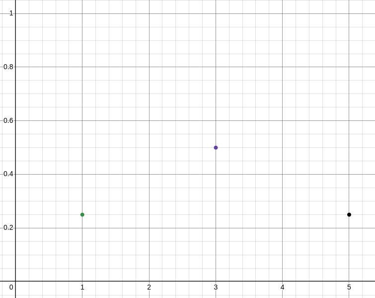
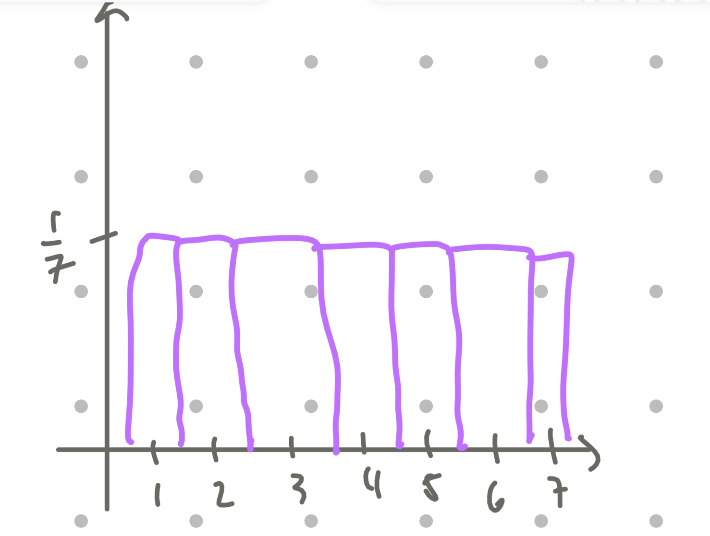

Final PMF:
fX(x)=⎩⎨⎧0.250.50.250:x=1:x=3:x=5:otherwise

Question 3
Let S be a random variable for the number of sixes when 2 fair dice are rolled.
(a) Describe Bernoulli random variables X and Y such that S=X+Y.
Let X be a Bernoulli random variable where:
X=1 if the first die shows a six.
X=0 otherwise.
Let Y be a Bernoulli random variable where:
Y=1 if the second die shows a six.
Y=0 otherwise.
The random variable S=X+Y counts the total number of sixes rolled, which is the sum of X and Y. This means that there are only 3 possible values for S: 0 if both rolls are not 6. 1 if only one of the two rolls are sixes (doesn't matter which roll). And 2 if both rolls are sixes.
(b) Calculate the expected values E(S), E(X), and E(Y).
Expected value of X:
X is a Bernoulli random variable with P(X=1)=61 (probability of rolling a six on the first die).
The expected value of a Bernoulli random variable is E(X)=P(X=1)⋅1+P(X=0)⋅0:
E(X)=61.
Expected value of Y:
Similarly, Y is a Bernoulli random variable with P(Y=1)=61.
The expected value is:
E(Y)=61.
Expected value of S:
Since S=X+Y, the expected value of the sum is the sum of the expected values:
E(S)=E(X)+E(Y).
Substituting:
E(S)=61+61=62=31.
E(X)=61E(Y)=61E(S)=31
Question 4
Subjects of a clinical trial of an experimental drug treatment are randomly and uniformly assigned to seven dosage levels U labeled 1 through 7.
a. Find the probability function and sketch the probability histogram.
Since the dosage levels U are uniformly assigned to the 7 levels 1 through 7, the random variable U follows a discrete uniform distribution. The probability for each level is equal because it is uniformly distributed throughout.
The probability mass function (PMF) is given by:
P(U=u)=71,u=1,2,3,4,5,6,7

b. Find μ and σ.
For a discrete uniform distribution over integers from 1 to n, the mean μ and standard deviation σ are calculated as follows:
This probability is the sum of the probabilities for all U values in the range [μ−σ,μ+σ].
Calculate the range:
μ−σ=4−2=2,μ+σ=4+2=6
So, the range is 2≤U≤6.
The probability of each dosage level is 71. The total probability for U=2,3,4,5,6 is:
Pr(2≤U≤6)=P(U=2)+P(U=3)+P(U=4)+P(U=5)+P(U=6)
Since each is 71:
Pr(2≤U≤6)=5×71=75
Question 5
Joshua decides to play a round of mini-golf (18 holes total). Suppose that his performance on each hole is independent and the number of strokes for each hole can be modeled by the same random variable S. The probability mass function of S is given by
The standard deviation is the square root of the variance:
σ=Var(S)=1.54≈1.24
(b) Let T be the random variable for the total number of strokes after all 18 holes. Is T the same as 18S? Why or why not?
Let T be the total number of strokes for all 18 holes. Since each hole is independent, T is the sum of 18 independent random variables S1,S2,…,S18, each with the same distribution as S.
The expectation of ( T ) is:
E[T]=18⋅E[S]=18⋅3.4=61.2
The variance of T is:
Var(T)=18⋅Var(S)=18⋅1.54=27.72
The standard deviation of T is:
σT=Var(T)=27.72≈5.26
Why T=18S:
T=18S because T is the sum of 18 independent realizations of S, but 18S would imply that the value of S is fixed and scaled by 18. This distinction arises because T accounts for variability over all 18 holes, while 18S assumes no variability.